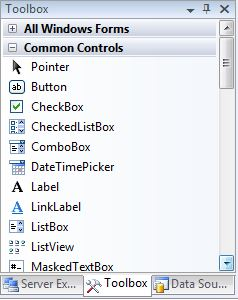
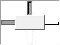
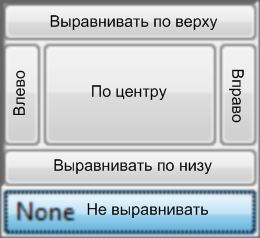
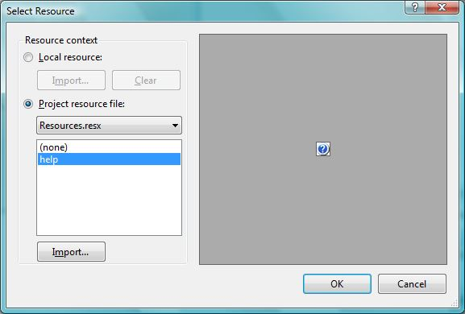
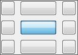
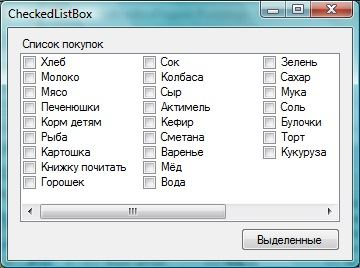
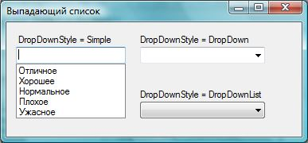
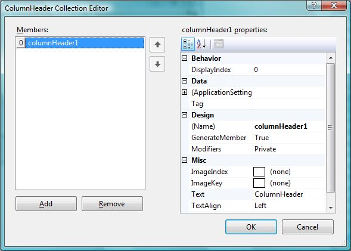
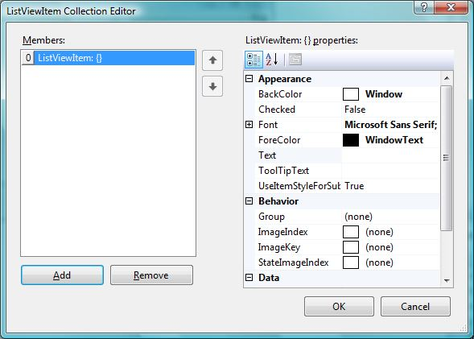
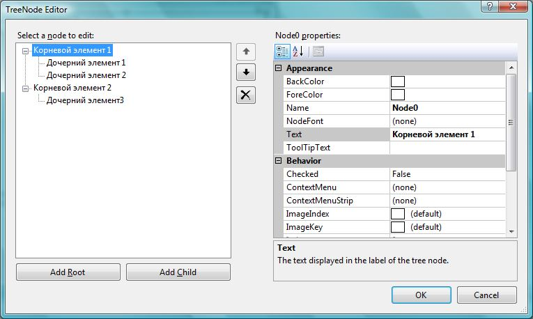

| Тема 5. Компоненты .NET. | ||
| Назад | ||
|
Компоненты в Visual Studio делятся на два типа: визуальные и невизуальные. Визуальные компоненты (метки, кнопки, поля ввода и т. д.) появляются на форме. Невизуальные компоненты (такие, как таймер) появляются на специальной панели и видимы только во время конструирования формы в виде имен со значками. Во время выполнения программы невизуальные компоненты не отображаются. Доступ к компонентам .NET можно получить из панели Toolbox (рис. 5.10). Если ее не видно, то нужно выполнить в меню команду View | Toolbox.
 Рис. 5.10. Панель Toolbox с компонентами Для вашего удобства все элементы управления сгруппированы по разделам. Вы можете создавать свои разделы и помещать в них любые компоненты, но для начала лучше оставить все по умолчанию, поскольку здесь все достаточно удобно продумано. В разделе All Windows Forms (Все Windows-формы) находятся все компоненты. Если вы забыли, в каком разделе искать нужный элемент управления, можете раскрыть этот раздел и найти нужный элемент в нем. Внутри разделов все компоненты отсортированы по именам. Компоненты на форме можно перетаскивать мышью, визуально устанавливая их положение. Когда вы выделяете компонент, обратите внимание на точки, которые появляются вокруг контура выделения. В те стороны, на которых есть жирные точки, можно растягивать компонент. Например, выделите форму, и у нее на рамке выделения окажутся точки только справа и снизу. Это значит, что вы можете изменять высоту и ширину формы перемещением правого и нижнего краев формы. Попробуйте установить на форму кнопку Button из раздела Common Controls (Общие элементы управления). Выделите ее и убедитесь, что вокруг кнопки появляются жирные точки во всех направлениях, а это значит, что с кнопкой можно делать все, что угодно. Попробуйте теперь перетащить на форму компонент-метку Label. Выделите ее. Тут есть чему удивиться, потому что у этого компонента нет квадратов по контуру, а есть только маленький квадрат в левом верхнем углу компонента. Это значит, что у компонента нельзя изменять размеры, но можно изменять его положение. На самом деле изменять размеры можно, просто по умолчанию компонент создается в режиме авторазмера. Все визуальные элементы управления содержат среди предков класс Control. Этот класс наделяет компоненты всеми необходимыми им свойствами и методами. Давайте пробежимся по основным свойствам компонентов, чтобы не повторяться в будущем, — тем более, что многие из них мы уже видели у формы:
Несколько замечаний по поводу свойства Anchor. По умолчанию компоненты прикрепляются к левой и верхней сторонам родителя. Если прикрепить их к левой и правой, то при изменении размера формы будут изменяться и размеры компонента. Прикрепление как бы указывает, что расстояние от компонента до края формы не должно изменяться, а, значит, при изменении формы приходится изменять размеры компонента. Если прикрепить компонент только к правой стороне, то при изменении размера формы он будет двигаться вместе с правой кромкой окна как хвостик, потому что в этом случае расстояние от правой кромки до компонента не должно меняться. Как изменять прикрепление? Выделите свойство Anchor и щелкните по кнопке вызова выпадающего списка в редакторе свойств. Появится небольшое окно (рис. 5.11), в котором от центра в разные стороны идут полоски. Темные полоски говорят о том, что в эту сторону сделано прикрепление, а белые — о том, что прикрепления нет. Щелкайте по полоскам, чтобы устанавливать или убирать прикрепления.
 Рис. 5.11. Окно установки якорей
 Рис. 5.12. Окно выравнивания Dock Еще одно свойство, на котором следует остановиться: Dock. Если щелкнуть по выпадающему списку в редакторе свойств для Dock, то появится маленькое окно, которое представляет собой небольшой компонент. Он разбит на секторы, как показано на рис. 5.12, только подписей на русском у вас не будет. Эти подписи я добавил в рисунок для удобства. Щелкая по секторам, вы выравниваете свой компонент на поверхности компонента контейнера, на котором он стоит. Например, если ваш компонент стоит на поверхности формы, и вы щелкнете по самому верхнему сектору для выравнивания по верху, то ваш компонент растянется вдоль верхней кромки окна, как это делают меню и панели в большинстве приложений. Таким способом очень просто и удобно создавать мощные и гибкие интерфейсы. Некоторые компоненты могут прятать определенные свойства, но большинство, все же, отображает их. 5.7. Общие компонентыДавайте пробежимся по компонентам и посмотрим на их основные свойства и методы использования, чтобы впоследствии было проще с ними работать. Я разбил рассмотрение компонентов на три больших раздела — в соответствии с их поло-жением на панели Toolbox. В этом разделе речь пойдет о компонентах из группы Common Controls. Мы будем рассматривать компоненты в том порядке, в котором они находятся в группе, т. е. по алфавиту. Некоторые из них в нашем рассмотрении могут быть пропущены по разным причинам. Если вы впервые сталкиваетесь с программированием и впервые работаете с .NET, то я рекомендовал бы больше поиграть со свойствами рассматриваемых ком-понентов. Что я под этим понимаю? Нужно пробовать устанавливать различные значения свойств, которые мы будем рассматривать, и, запуская приложение, смот-реть на результат работы. Я мог бы расписывать вам каждое свойство очень по-дробно, но ничего не заменит реальной практики, которую вы можете получить, если сами будете пытаться, пробовать и изучать. Мы станем рассматривать свойства в основном с точки зрения дизайна, но не забывайте, что это просто свойства компонентов, а, значит, вы можете изменять их в коде программы. Впоследствии мы будем чаще обращаться к свойствам и мето-дам компонентов именно в коде. 5.7.1. ButtonСоздайте новый проект и перетащите на его форму кнопку Button. Расположите ее ближе к левому верхнему углу окна. Выделите кнопку и найдите свойство Text. Это свойство отвечает за текст, который будет отображаться на поверхности кноп-ки. По умолчанию свойство равно имени компонента, а имя компонента именуется как buttonN, где N — это номер компонента с таким именем, т. е. самая первая кноп-ка на форме получит имя button1. Мы ранее договорились, что компоненты не должны иметь бессмысленных имен, поэтому давайте изменим свойство Name кнопки, чтобы оно обрело смысл. Какое разумное имя выбрать? Имя должно отражать то, что будет выполнено по нажатию кнопки, а что она будет делать, мы пока не решили, поэтому дадим ей чуть более умное, но, все еще, бессмысленное имя. Напишите в свойстве Name имя myFirstButton. Дизайнер объявит в своем модуле соответствующую переменную, и для доступа к кнопке мы должны будем писать в коде myFirstButton. Давайте попробуем сделать в нашем примере что-нибудь действующее. Просто поставить кнопку — маловато. Щелкните по ней двойным щелчком, чтобы создать обработчик события Click, который будет вызываться каждый раз, когда вы щелк-нете мышью по кнопке. Это, наверно, самое популярное свойство такого компо-нента, и именно этот обработчик создают программисты в большинстве случаев. Любое свойство можно изменять и во время выполнения программы. Давайте по нажатию кнопки увеличивать значение позиции кнопки, т. е. увеличивать левую и верхнюю позиции (свойства Left и Top соответственно). Итак, в методе для обра-ботчика события пишем: private void button1_Click(object sender, EventArgs e)
{
myFirstButton.Left += 5;
myFirstButton.Top += 5;
}
Банальное увеличение целочисленного свойства объекта (объектом выступает кнопка), и больше добавить к этому коду просто нечего. Для чего чаще всего используется кнопка? Конечно же, чтобы на нее нажимали пользователи, поэтому в реальных приложениях, как правило, приходится изме-нять свойство имени, свойство текста и отлавливать событие Click. Еще одно свой-ство, которое может вас заинтересовать: Image, через него вы можете задать кнопке какую-либо картинку. Что ж, остановимся и посмотрим, как устанавливается картинка. Выделите свойство Image кнопки в панели Properties. Щелкните по появившейся в строке свойства кнопке, и вы должны увидеть окно загрузки изображения Select Resource (рис. 5.13).
 Рис. 5.13. Окно загрузки изображения В этом окне слева можно увидеть два переключателя:
Чтобы загрузить картинку и добавить ее в выбранный файл ресурсов (локаль-ный или выбранный), нажмите кнопку Import. Чтобы назначить выбранное/загру-женное изображение, нажмите кнопку OK. Теперь очень важный момент — положение картинки на кнопке. По умолча-нию она окажется под текстом. Положение картинки определяет свойство TextImageRelation (отношение текста и картинки). Тут можно выбрать одно из сле-дующих значений:
Еще одно свойство, на котором я хочу остановиться: TextAlign. Если выделить его в окне свойств, то появляется кнопка вызова выпадающего списка, а если щелкнуть по ней, то появится всплывающее окно (рис. 5.14). Здесь 9 кнопок в виде прямоугольников. Щелкая по кнопкам, вы можете выбрать, по какой кромке кноп-ки будет выравниваться текст. По умолчанию выбрана самая центральная кнопка, т. е. текст будет выровнен по центру. Если выбрать правую нижнюю кнопку, то текст будет выровнен к правому нижнему углу кнопки. Наверно, это все самое интересное при использовании кнопок.
 Рис. 5.14. Окно выбора выравнивания текста относительно кноп-ки 5.7.2. CheckBoxКомпонент CheckBox позволяет выбирать одно из двух состояний, не считая не-определенного состояния, которое нельзя установить программно. Этот компонент используется, когда нужно, чтобы пользователь выбрал один из двух вариантов: да или нет. Например, в окнах настройки шрифтов флажком CheckBox выбирают, должен быть шрифт полужирным или нет, должен ли он быть подчеркнутым или нет, и всегда вопрос будет: да или нет. У компонента всего два интересных свойства, не считая общих для всех компо-нентов свойств:
Следующий пример показывает, как можно программно изменять значения этих свойств: runAtStartupCheckBox.CheckState = CheckState.Indeterminate; deleteOnExitCheckBox.Checked = false; В первой строке состояние компонента сбрасывается на неопределенное, а во второй строке другому компоненту свойство Checked меняется на false. У этого компонента есть три интересных события, которые относятся именно к нему и могут пригодиться вам:
5.7.3. CheckedListBoxДопустим, вам нужно создать список, в котором напротив элементов пользова-тель должен будет ставить галочки. Если список маленький и не очень однород-ный, то можно обойтись несколькими элементами управления типа CheckBox. А ес-ли список состоит из 20 элементов? А если список динамический и может изме-няться? Вот тут на помощь приходит CheckedListBox. Пример такого компонента можно увидеть на рис. 5.15. На рис. 5.15 показано окно, в котором в виде списка с флажками CheckBox при-веден список покупок. Подразумевается, что пользователь идет с ноутбуком или другим устройством по гипермаркету и отмечает по своему списку, что он купил, а что нет.
 Рис. 5.15. Пример компонента CheckedListBox Поскольку список на каждую неделю отличается (по крайней мере, у меня), то реализовывать эту динамику намного проще через компонент CheckedListBox. Создайте новое приложение и поместите на его форму экземпляр компонента CheckedListBox. Выделите компонент и в панели Properties найдите свойство Items. Выделите его, а затем щелкните по появившейся кнопке. Появится окно небольшо-го текстового редактора, в котором можно вводить элементы списка. Каждый от-дельный элемент нужно писать в новой строке. По умолчанию все элементы списка расположены в одну колонку. Если вы хо-тите расположить их в несколько колонок, как это сделано у меня, то нужно уста-новить свойство MultiColumn в true. Чтобы элементы в списке были отсортированы, свойство Sorted нужно установить в true. Как работать с компонентом? Нам может понадобиться узнать, какой элемент выбран сейчас, т. е. на каком элементе сейчас стоит курсор. Это можно узнать через свойство SelectedItem следующим образом: if (checkedListBox1.SelectedItem != null)
checkedListBox1.SelectedItem.ToString();
В первой строке я проверяю, не является ли выделенный элемент нулевым. Ес-ли он нулевой, то ничего не выделено, и мы не можем работать со свойством SelectedItem, которое имеет тип Object, т. е. само по себе является объектом класса. В таком случае свойство нулевое, и для него память не распределена, а, значит, обращение к свойствам или методам SelectedItem приведет к ошибке. Если свойство не нулевое, то мы можем привести его к строке и увидеть имя элемента, который выделен. Именно это и происходит во второй строке. Теперь посмотрим, как можно узнать все элементы, на которых стоят галочки, т. е. все отмеченные элементы. Выделенный и отмеченные элементы — это разные вещи. Отмеченные элементы хранятся в виде коллекции (списка) в свойстве CheckedItems. Мы можем перебрать это свойство с помощью цикла — например, foreach: foreach (String str in checkedListBox1.CheckedItems)
MessageBox.Show(str);
В этом случае в цикле просто выводятся все отмеченные элементы в окне со-общений, поэтому, если будете тестировать пример, не отмечайте слишком много элементов, чтобы много раз не нажимать кнопку OK для закрытия окна сообщений. Вы можете управлять списком элементов в списке CheckedListBox. Список эле-ментов хранится в свойстве Items. Это свойство имеет тип класса коллекции Collection. Коллекции требуют отдельного разговора, а пока я хочу только сказать, что у этого свойства есть такие методы, как Add() (добавить новый элемент), Remove() (удалить), Clear() (очистить) и т. д. Коллекции встречаются очень часто, и в большинстве случаев работа с ними идентична, поэтому не буду торопиться и показывать вам все возможности коллекций, — мы станем знакомиться с ними постепенно. Следующий пример показывает, как можно добавить в список новый элемент: checkedListBox1.Items.Add("Это что-то", true);
В качестве первого параметра методу Add() коллекции Items передается строка, содержащая текст, который будет назначен в качестве заголовка новому элементу. Второй параметр определяет, должен ли новый пункт быть помеченным или нет. Чаще всего коллекции компонентов будут принимать только один параметр — тек-стовое название. Но тут не совсем обычный компонент, потому что у элементов есть свойство в виде флажка, который можно установить при создании. Следующий интересный пример показывает один из вариантов удаления отме-ченных элементов: foreach (int index in checkedListBox1.CheckedIndices)
checkedListBox1.Items.RemoveAt(index);
В этом случае запускается цикл, перебирающий все элементы массива, который содержится в свойстве CheckedIndices. А содержится в этом свойстве массив чисел, которые являются индексами помеченных элементов. Если ничего не помечено, то это свойство содержит пустой массив. Внутри цикла вызывается метод RemoveAt() свойства Items. Этот метод удаляет из коллекции Items элемент под индексом, указанным в качестве параметра. А это именно то, что нам нужно. Такое удаление таит в себе опасность. Попробуйте запустить пример, выделите последние два элемента и нажмите кнопку удаления. Программа завершит работу аварийно. Допустим, что в списке 10 элементов, и вы выделили 9-й и 10-й для уда-ления. После удаления 9-го количество элементов сокращается до 9, и на следую-щем шаге удаление 10-го станет невозможным, потому что он уже сместился на 9-ю позицию. Проблему можно решить банальным запуском удаления, начиная с максималь-ного индекса, к минимальному: for (int i = listBox1.CheckedIndices.Count - 1; i >= 0; i--)
listBox1.Items.RemoveAt(listBox1.CheckedIndices[i]);
В этом примере я запускаю цикл, начиная с последнего элемента из списка CheckedIndices, до нулевого. Свойство Count возвращает количество элементов в коллекции. Не забываем, что индексы нумеруются с нуля, а количество элементов отображает реальное количество, поэтому при инициализации переменной i я вы-читаю единицу из количества. Цикл идет с самого большого к минимальному, поэтому на этот раз, если выделить последние два элемента из 10, сначала будет удален 10-й, а потом 9-й, что абсолютно не нарушает пределы коллекции. После удаления 10-го в коллекции остается 9 элементов, а нам как раз нужно удалить 9-й. Среди событий компонента вас могут заинтересовать следующие:
Следующий пример показывает обработчик события SelectedValueChanged. При изменении выделенного элемента его заголовок будет отображаться на поверх- ности метки selectedLabel: private void checkedListBox1_SelectedValueChanged(
object sender, EventArgs e)
{
selectedLabel.Text = checkedListBox1.SelectedItem.ToString();
}
5.7.4. ComboBoxВыпадающий список ComboBox удобен тогда, когда нужно выбрать одно значе-ние из целого списка. Создайте новое приложение и поместите на форму экземпляр компонента ComboBox. Элементы выпадающего списка задаются в свойстве Items, который имеет тип коллекции, схожий с тем, что мы рассматривали в разд. 5.7.3 у компонента CheckedListBox. Давайте посмотрим, какие самые интересные свойства добавляет класс ComboBox к базовому классу компонентов:
 Рис. 5.16. Стили выпадающего списка ComboBox Продолжим знакомиться с методами коллекции и посмотрим, как можно доба-вить сразу множество элементов. Для этого у коллекции есть метод AddRange(). Этому методу передается массив объектов класса Object, а так как это предок для любого класса, то, значит, можно передать массив любых значений. Чтобы отобра-зить в списке элементы в виде строк, компонент преобразует значения объектов в строку с помощью метода ToString(), наследуемого от Object. Следующий пример показывает, как можно создать массив из элементов и тут же передать его методу AddRange() без сохранения в какой-либо переменной: comboBox1.Items.AddRange(new String[] { "Отлично", "Хорошо"});
Если необходимо очистить сразу все элементы списка, то можно воспользо-ваться методом Clear() коллекции: comboBox1.Items.Clear(); Теперь посмотрим, как можно узнать, какой элемент выделен в выпадающем списке. Чтобы узнать выделенный элемент в виде текста, можно использовать свойство SelectedItem: if (comboBox1.SelectedItem != null)
{
String str = comboBox1.SelectedItem.ToString();
MessageBox.Show(str);
}
else
MessageBox.Show("Ничего не выделено");
Прежде чем работать со свойством SelectedItem, желательно проверить его на нулевое значение. Если в выпадающем списке ничего не выделено, то SelectedItem будет равен null. При попытке привести свойство к строке с помощью метода ToString(), когда свойство равно нулю, программа сгенерирует ошибку. Если вы хотите узнать индекс выделенного элемента из списка, то можно вос-пользоваться свойством SelectedIndex. Это свойство — число, и его проверять на null не нужно. Если ничего не выделено, то свойство вернет -1. Это же значение будет, если вы введете в поле свое значение, а не выберете что-то из списка. Среди событий компонента вас могут заинтересовать SelectedIndexChanged и SelectedValueChanged, которые мы уже видели в разд. 5.7.3. 5.7.5. DateTimePickerЭтот компонент удобен в тех случаях, когда пользователю нужно вводить в программу дату или время. И то, и другое имеет отдельный тип данных, о котором мы будем говорить в разд. 6.5, а сейчас познакомимся с компонентом DateTimePicker. Он выглядит как выпадающий список, только в правом углу вместо стрелки для открытия списка находится значок, по нажатию на который появляется всплываю-щее окно для выбора даты. Это очень удобное окно, позволяющее избежать ошибок при вводе компонентов даты. У компонента множество интересных свойств, дающих возможность настроить внешний вид календаря на любой цвет и вкус. Но самые интересные свойства — это функциональные:
Чтобы получить в коде выбранную пользователем дату, можно использовать следующий код: DateTime dt = dateTimePicker1.Value; Выбранное пользователем значение сохраняется в переменную класса DateTime. Да, время в .NET представляется классом DateTime. Это не просто переменная, а класс с большим количеством свойств и методов. Самым интересным событием компонента можно назвать ValueChanged, которое генерируется каждый раз, когда вы изменяете дату или время внутри компонента. Но пользователь далеко не всегда может выбрать новое значение даты за один раз. Он может выбрать значение, подумать, а потом снова изменить его. Если вы хотите после изменения даты или времени тут же перерисовывать что-то, то это событие будет как раз кстати. Если вам не нужно отслеживать изменения, которые делает пользователь, и вы хотите получить только окончательный выбор, то в этом случае может быть вы-годнее обрабатывать событие Leave, которое генерируется, когда компонент теряет фокус ввода, т. е. пользователь переключился на работу с другим элементом управ-ления. 5.7.6. Label и LinkLabelОсновная цель обоих компонентов — создание подписей, а у LinkLabel есть до-полнительные возможности для задания части текста на компоненте в виде под-черкнутой ссылки, при наведении на которую курсор будет меняться на значок с рукой. У компонента Label основными свойствами являются:
Компонент LinkLabel добавляет следующие свойства:
Несмотря на то, что компонент LinkLabel похож на интернет-ссылку всеми сво-ими фибрами, он только похож, а не работает как интернет-ссылка. Если вы введе-те в текстовое поле интернет-адрес (URL) и щелкнете по ссылке в запущенном приложении, ничего не произойдет. Вы должны сами написать код, который дол-жен выполняться по нажатию ссылки, и делать это нужно в обработчике события LinkClicked. Хотя я убегаю сейчас в сторону, я покажу вам, как можно в обработчике собы-тия запустить браузер и загрузить страницу: System.Diagnostics.Process.Start("http://www.flenov.info");
В качестве параметра этого метода передается строка, которую нужно запу-стить в системе. В данном случае это URL, а для обработки URL ОС Windows запу-стит браузер по умолчанию и загрузит указанную страницу. Этой же командой можно запустить файл на выполнение. Для этого нужно просто указать имя файла, который вы хотите открыть или запустить. 5.7.7. ListBoxПо своим свойствам компонент очень похож на выпадающий список CheckedListBox, потому что они очень похожи и по смыслу. Но список ListBox не имеет около каждого элемента списка компонента CheckBox, позволяющего ставить флажки. С другой стороны, у ListBox работает свойство SelectionMode. Вы можете уста-новить его в MultiSimple или MultiExtended, чтобы дать возможность пользователю выбирать несколько элементов из списка. В CheckedListBox попытка установить любое из этих значений приведет к сообщению об ошибке. Если нужно узнать, какой элемент сейчас выбран, можно воспользоваться свой-ством SelectedItem. Если вы разрешили возможность множественного выбора, то список выделенных элементов можно получить из свойства SelectedItems. Следу-ющий пример перебирает список выделенных компонентов и выводит каждую строку в диалоговом окне: foreach (string str in listBox1.SelectedItems)
MessageBox.Show(str);
Среди событий компонента вас могут заинтересовать SelectedIndexChanged и SelectedValueChanged, которые мы уже видели в разд. 5.7.3. 5.7.8. ListViewПредставление списка ListView — достаточно сложный на данном этапе изуче-ния компонент и очень мощный, потому что обладает громадными возможностями. С подобным компонентом мы работаем практически каждый день, потому что в окне Мой компьютер значки и имена файлов отображаются с помощью компо-нента этого класса. Итак, пробежимся по свойствам компонента:
 Рис. 5.17. Редактор колонок
 Рис. 5.18. Редактор элементов списка Почему для свойств колонок, групп и элементов списка появляется окно редак-тора? Такое окно появляется для любых свойств нестроковых коллекций. До этого у выпадающего списка и у списка выбора мы видели строковые коллекции, и для их редактирования достаточно было простого текстового редактора. Тут у нас кол-лекции более сложных объектов, и для редактирования их свойств нужен специа-лизированный редактор, который и отображается. Как вы уже поняли, элементы списка хранятся в свойстве Items. У этого свой-ства есть несколько перегруженных вариантов метода Add(), чтобы добавлять эле-менты в список. Самый простейший способ добавить новый элемент — передать методу текстовую строку, которая будет установлена в качестве заголовка нового элемента: listView1.Items.Add("Заголовок элемента");
Каждый элемент списка имеет класс ListViewItem, и в данном случае элемент такого класса создается автоматически, и ему присваивается указанный заголовок. Если нужно настроить несколько свойств нового элемента, то удобнее и эффек-тивнее создать объект класса ListViewItem и передать этот объект методу Add(). Например, как в следующем примере: ListViewItem newItem = new ListViewItem("Test");
newItem.Group = listView1.Groups[0];
listView1.Items.Add(newItem);
Здесь явно создается экземпляр класса ListViewItem. Конструктору этого класса передается строка, которая станет заголовком элемента. Во второй строке у этого же элемента изменяется свойство Group. Группа имеет тип ListViewGroup, и уже су-ществующие группы находятся в списке свойства Groups. Чтобы не придумывать ничего сложного, я просто использую нулевую группу из этого списка (надеясь, что она там уже есть). Теперь остается только вызвать метод Add() у коллекции и передать ему созданный и настроенный объект класса ListViewItem. А как добавить группу программно? Посмотрите на следующий пример: // создать группу
ListViewGroup newGroup = new ListViewGroup("Группа");
listView1.Groups.Add(newGroup);
// создать элемент
ListViewItem newItem = new ListViewItem("Test", newGroup);
listView1.Items.Add(newItem);
Создание группы похоже на создание элементов списка, потому что группы — это тоже коллекции. Обратите внимание на то, как создается на этот раз элемент списка. В этом примере я передаю конструктору не только заголовок, но и объект группы, которая была создана только что. В реальных приложениях может понадобиться также и определение выделен-ных элементов. У представления списка есть возможность выбирать несколько элементов сразу. Список этих элементов находится в свойстве SelectedItems. Это, опять же, коллекция из элементов ListViewItem, и ее можно просмотреть с помощью цикла foreach, например: foreach (ListViewItem item in listView1.SelectedItems)
MessageBox.Show(item.Text);
В этом примере в цикле перебираются все выделенные в списке элементы и с помощью диалогового окна MessageBox отображаются названия элементов. Теперь посмотрим, как можно удалять элементы из списка: if (listView1.Items.Count > 0)
listView1.Items.Remove(listView1.Items[0]);
Прежде чем удалять элемент, нужно убедиться, что он есть. Я удаляю в этом примере нулевой элемент, поэтому достаточно удостовериться, что в списке есть хотя бы один элемент, т. е. Items.Count больше нуля. После этого вызывается метод Remove() свойства Items, которому нужно передать удаляемый элемент. Я выбираю нулевой элемент списка Items[0]. Далеко не всегда удобно удалять элемент по объекту, иногда удобнее исполь-зовать индексы. Следующий пример удаляет 5-й элемент, предварительно прове-рив, что в списке есть не менее пяти элементов: if (listView1.Items.Count > 5)
listView1.Items.RemoveAt(5);
Для удаления использовался метод RemoveAt(), которому передается индекс удаляемого элемента. Среди событий, которые вас могут заинтересовать при работе с компонентом, можно выделить следующие:
У компонента есть очень мощная возможность — программист сам может реа-лизовать функцию рисования элементов представления списка. Таким образом, элементы списка могут быть окрашены в любой цвет, все зависит от того, какой код вы напишете и как вы захотите нарисовать элементы списка. 5.7.9. PictureBoxКомпонент PictureBox позволяет отображать картинку, и его чаще используют с целью оформления в тех местах, где нужно добавить какое-то изображение. Основное свойство компонента — Image. Если вызвать редактор свойства, то по- явится окно, которое мы уже видели при рассмотрении работы со значком (см. рис. 5.13). Вы можете указать положение картинки на диске или в Интернете. В этом случае картинка не попадет в файл ресурсов, а останется на том месте, где и была. В компоненте будет только ссылка на файл, которую вы должны указать в свойстве ImageLocation. Компонент загрузит картинку после загрузки программы. Я рекомендую указывать всегда относительные пути к файлам, если вы хотите поставлять их вместе с программой. Например, не нужно указывать полный путь к файлу типа C:\projects\myprogram\image.jpg. Когда пользователь установит у себя вашу программу, у него, скорее всего, не будет такого же пути, а создавать его и копировать туда файл во время установки программы — это самоубийство. Вашу программу сотрут сразу же. Чтобы этого не произошло, самый простой способ — помещать файлы в ту же папку, что и исполняемый файл, а в свойстве ImageLocation указывать только имя файла, без пути. Если вы укажете ссылку на картинку в Интернете, то после старта программы ее загрузка потребует некоторого времени. Чтобы компонент отображал на время загрузки хоть что-то, вы можете указать начальную картинку в свойстве InitialImage. Если картинка из Интернета по каким-либо причинам не сможет быть загружена (например, нет доступа к сайту, где она лежит), то будет отображена картинка из свойства ErrorImage. Есть еще одно свойство, которое вам может пригодиться, — SizeMode. Это перечисление, позволяющее выбрать одно из следующих значений:
5.7.10. ProgressBarВо время выполнения продолжительного действия очень важно показать пользователю, что программа не зависла, а выполняет запрошенные действия. Когда вы копируете или скачиваете из Интернета какой-нибудь большой файл, то система отображает информационное окно, в котором бежит индикатор процесса ProgressBar. У этого компонента есть три интересных свойства:
Создайте новое приложение и поместите на форму компоненты ProgressBar и кнопку. Никакие свойства менять не будем, а просто создайте событие Click для кнопки и в нем напишите: for (int i = 0; i < 100; i++)
{
progressBar1.Value = i;
Thread.Sleep(100);
}
В примере запускается цикл, который выполняется от 0 до 100. Внутри цикла просто присваиваем свойству Value компонента ProgressBar очередное значение переменной i, которая увеличивается на 1 на каждом шаге. Чтобы цикл работал не очень быстро, в него добавлена строка с вызовом статичного метода Sleep() класса Thread, которая создает задержку на переданное в качестве параметра значение в миллисекундах. 5.7.11. RadioButtonЭтот компонент мне напоминает знаменитую фразу: "Один за всех, мы за ценой не постоим!" Видимо потому, что он очень похож на CheckBox и позволяет пользователю выбирать этот компонент, но только один из компонентов RadioButton на контейнере может быть выделен. Под контейнером понимается любой компонент, на поверхности которого можно расположить другие компоненты. Мы пока работаем только с формами, поэтому на форме может быть выделен только один из компонентов класса RadioButton. Но существуют другие контейнеры, и они расположены в разделе Containers панели Toolbox (их мы будем подробнее рассматривать в разд. 5.8). Основные свойства компонента — это, конечно же, Text, где вы должны задавать текст, который будет отображаться на компоненте, и Checked, которое указывает на то, выделен компонент или нет. Создайте новое приложение и поместите на его форму три компонента класса RadioButton. Запустите приложение и попробуйте пощелкать по ним. Выбор с одного компонента переходит на другой автоматически. Вам не нужно снимать выделение с текущего компонента, прежде чем выбирать новый. Иногда бывает необходимость сделать какую-то проверку, прежде чем разрешить пользователю выбрать определенный компонент RadioButton. Как это сделать, если все выделяется автоматически? В этом случае у свойства, которое нужно про- верять, следует установить свойство AutoCheck в false. Теперь, если вы щелк- нете по этому компоненту, то он не выделится. Мы должны сами отлавливать событие Click по компоненту, производить проверку и самостоятельно изменять свойство: private void radioButton3_Click(object sender, EventArgs e)
{
if (CanChange)
radioButton3.Checked = !radioButton3.Checked;
}
Здесь происходит проверка, и если какое-то свойство по имени CanChange равно true, то свойству Checked компонента radioButton3 присваивается противоположное значение этого же свойства этого же компонента. Запустите приложение и попробуйте выбрать третий компонент. Обратите внимание, что на этот раз выделение с компонента, который был выделен до этого, не было снято автоматически. Компоненты, у которых свойство AutoCheck равно false, не влияют на выделение других компонентов на форме. То есть, мы можем сделать так, чтобы два и более компонента RadioButton на одном контейнере были выделены. Честно сказать, не знаю, где это можно использовать, потому что это может сбить с толку пользователя. 5.7.12. TextBoxЭтот компонент предназначен для ввода данных пользователем. Если вам нужно, чтобы пользователь ввел строку, число или еще что-либо, мы чаще всего установим на форму именно этот компонент. У него не так уж много значащих свойств:
У компонента всего пара интересных событий. Первое из них: TextChanged, оно генерируется каждый раз, когда пользователь изменил текст в компоненте. Еще одно свойство, которое может вам пригодиться: Modified. Значение свойства автоматически изменяется на true, если пользователь внес какое-то изменение в текст компонента. Сбросить значение на false можно только вручную. Например, с помощью следующего обработчика события ModifiedChanged мы отображаем в метке label2 состояние компонента: private void lastnameTextBox_ModifiedChanged(object sender,
EventArgs e)
{
if (lastnameTextBox.Modified)
label2.Text = "Изменен";
else
label2.Text = "Сохранен";
}
Чтобы сбрасывать свойство Modified в false, можно добавить на форму кнопку и по ее нажатию написать: lastnameTextBox.Modified = false; Теперь, если внести изменение в текст, то свойство Modified изменится на true, а по нажатию кнопки свойство будет меняться на false. 5.7.13. TreeViewПоследний компонент из разряда общих, который мы здесь рассмотрим, — это TreeView, он позволяет выстраивать информацию в виде дерева. Какой пример дерева можно привести? А вот, например, в панели Solution Explorer структура проекта построена в виде дерева. Самые интересные из свойств компонента TreeView:
 Рис. 5.19. Редактор элементов списка дерева Давайте создадим приложение и бросим на него компонент дерева. Теперь положим на него еще три кнопки: Добавить корневой элемент, Добавить дочерний элемент и Удалить элемент. По нажатию первой кнопки пишем следующий код: TreeNode newNode = new TreeNode("Корневой элемент");
treeView1.Nodes.Add(newNode);
В первой строке мы объявляем переменную класса TreeNode и инициализируем ее. Что это за класс? Это класс элементов дерева. Заголовок элемента я передал в ка честве параметра конструктору при инициализации, хотя можно было написать и так: TreeNode newNode = new TreeNode(); newNode.Text = "Корневой элемент"; В этом примере сначала инициализируется переменная newNode конструктором по умолчанию, а потом устанавливается свойство Text. Чтобы добавить корневой элемент дерева, нужно вызвать метод Add() свойства Nodes компонента дерева. Помните, мы вызывали редактор именно свойства Nodes из панели Properties при работе с компонентом визуально? Метод Add() имеет множество перегруженных вариантов для вашего удобства. Можете использовать тот, который больше нравится или который лучше подходит к конкретной ситуации. Например, добавить корневой элемент можно было и одной строкой кода: treeView1.Nodes.Add("Корневой элемент");
В этом случае метод сам создаст экземпляр класса TreeNode для хранения элемента дерева и присвоит ему заголовок, который вы передали методу. К такому варианту прибегают в тех случаях, когда вам не нужно где-то дополнительно хранить переменную объекта элемента дерева или выполнять дополнительные манипуляции с элементом. А как добавить дочерний элемент к уже существующему корню? Как вообще хранятся дочерние элементы? Если корневые элементы хранятся в виде коллекции прямо в свойстве Nodes компонента дерева, то дочерние элементы хранятся у своих родительских элементов в свойстве Nodes. Посмотрим на следующий пример: if (treeView1.SelectedNode != null)
treeView1.SelectedNode.Nodes.Add("Дочерний элемент");
В свойстве SelectedNode компонента TreeView хранится выделенный элемент дерева. Это свойство имеет тип TreeNode со всеми вытекающими отсюда последст- виями. Здесь я сначала проверяю свойство SelectedNode на нулевое значение. Заведите и себе в привычку, прежде чем обращаться к свойствам объектной переменной, которую вы сами явно не инициализировали, всегда проверять ее на нулевое значение. В данном случае, если в дереве ничего не выбрано, свойство может равняться нулю, и попытка обратиться к Nodes приведет к сбою. Я обезопасил нас от сбоя, поэтому для добавления дочернего элемента по отношению к выделенному мы можем вызвать метод Add() свойства Nodes объекта SelectedNode. Во как получилось! Этот метод также имеет множество перегруженных вариантов, и ему тоже можно передать заранее созданный экземпляр класса TreeNode. У нас на форме осталась еще одна кнопка для удаления элемента. Давайте напишем для нее код: if (treeView1.SelectedNode != null)
treeView1.SelectedNode.Remove();
Сначала уже по привычке проверяем свойство SelectedNode на нулевое значение, и если оно не нулевое, то вызываем метод Remove(), который удаляет текущий элемент. Если у него есть дочерние элементы, то они исчезнут вместе со своим родителем. Если вы хотите удалить только дочерние элементы, не трогая их родителя, то можно выполнить следующую строку: treeView1.SelectedNode.Nodes.Clear(); Как мы уже знаем, дочерние элементы находятся в свойстве Nodes, и именно у этого свойства есть методы добавления новых дочерних элементов и метод Clear() для очистки. Свойство Nodes — содержит элементы со всеми вытекающими последствиями, т. е. все, что мы говорили ранее и будем говорить в будущем про коллекции, будет затрагивать и это свойство. Коллекции схожи с массивами, и для доступа к заголовку нулевого корневого элемента дерева нужно написать: treeView1.Nodes[0].Text, а для доступа к первому элементу: treeView1.Nodes[1].Text (на рис. 5.19 это Корневой элемент 2). Для доступа к нулевому дочернему элементу нулевого корневого элемента нужно уже написать: treeView1.Nodes[0].Nodes[0].Text и т. д., вглубь по веткам нашего дерева. А что, если нужно просмотреть элементы дерева, — например, для сохранения их в файл или для поиска в дереве? Тут хорошо подходит классическая задача рекурсивного вызова. Давайте посмотрим, как это реализовать в виде кода. Следующий метод принимает в качестве параметра путь и коллекцию элементов: void ViewCollection(string caption, TreeNodeCollection collection)
{
if (caption != "")
caption += "-";
foreach (TreeNode node in collection)
{
if (node.Nodes.Count > 0)
ViewCollection(caption + node.Text, node.Nodes);
else
MessageBox.Show(caption + node.Text);
}
}
Чтобы просмотреть дерево с самого начала, этот метод нужно вызвать следующим образом: ViewCollection("", treeView1.Nodes);
Первый параметр — пустая строка, т. е. начальный путь пустой. Второй параметр — элементы из свойства Nodes, где хранятся корневые элементы дерева. Внутри метода сначала проверяем текущее содержимое переменной caption, и если оно не пустое, то добавляем разделитель в виде знака тире. Так как коллекция схожа с массивом, то мы можем перебирать ее с помощью цикла foreach. Каждый элемент коллекции имеет тип TreeNode, и это мы уже знаем. Внутри цикла проверяем, есть ли у текущего элемента дочерние элементы, и если есть, то рекурсивно вызываем метод ViewCollection() для просмотра этих дочерних элементов. При этом значение первого параметра увеличиваем на значение заголовка текущего элемента. Если дочерних элементов нет, то выводится сообщение, в котором отображается содержимое переменной caption плюс имя текущего элемента. Таким образом, метод будет перебирать все элементы дерева в поисках конечных пунктов. В процессе поиска через переменную caption накапливается полный путь к этим конечным элементам. У дерева наиболее интересными являются следующие события: AfterCheck — возникает, когда пользователь ставит флажок или убирает его с какого-то элемента дерева. У обработчика события второе свойство имеет тип TreeViewEventArgs. У этого класса есть свойство Node, в котором хранится помеченный элемент дерева: private void treeView1_AfterCheck(object sender,
TreeViewEventArgs e)
{
MessageBox.Show(e.Node.Text);
}
AfterCollapse — возникает, когда пользователь свернул какую-либо ветку дерева. Второй параметр имеет тип TreeViewEventArgs, свойство Node которого содержит свернутый элемент дерева; AfterExpand — возникает, когда пользователь развернул какую-либо ветку дерева. Второй параметр имеет тип TreeViewEventArgs, свойство Node которого содержит свернутый элемент дерева; AfterLabelEdit — событие возникает, когда пользователь завершил редактирование заголовка элемента дерева. Второй параметр события имеет тип NodeLabelEditEventArgs, который имеет следующие интересные свойства:
AfterSelect — событие возникает, когда пользователь выбирает какой-либо элемент в дереве. Тут нужно остановиться и заметить, что для всех описанных событий есть двойники, которые вызываются перед возникновением события. Например, для события AfterSelect есть двойник с именем BeforeSelect, который генерируется перед тем, как изменить выделенный элемент. То есть, в обработчике события BeforeSelect в свойстве SelectedNode будет находиться еще старый элемент дерева, который был выделен ранее. Но продолжим краткую экскурсию по событиям, чтобы вы знали, какие события есть и по какому событию искать дополнительную информацию в MSDN: DrawNode — событие срабатывает при необходимости нарисовать какой-то элемент дерева. Событие генерируется, только когда дерево находится в режиме OwnerDraw; NodeMouseClick — возникает, когда пользователь щелкнул по элементу дерева. Второй параметр события имеет тип TreeNodeMouseClickEventArgs, и через его свойства Node и Button мы можем узнать, по какому элементу дерева щелкнули и какой кнопкой мыши; NodeMouseDoubleClick — возникает, когда пользователь щелкнул по элемен- ту дерева двойным щелчком. Второй параметр события имеет тип TreeNodeMouseClickEventArgs со всеми вытекающими последствиями; NodeMouseHover — возникает, когда курсор мыши движется над каким-либо элементом.
|
||
| Конспект подготовлен Бакулиным А. М. 2022 год. | ||